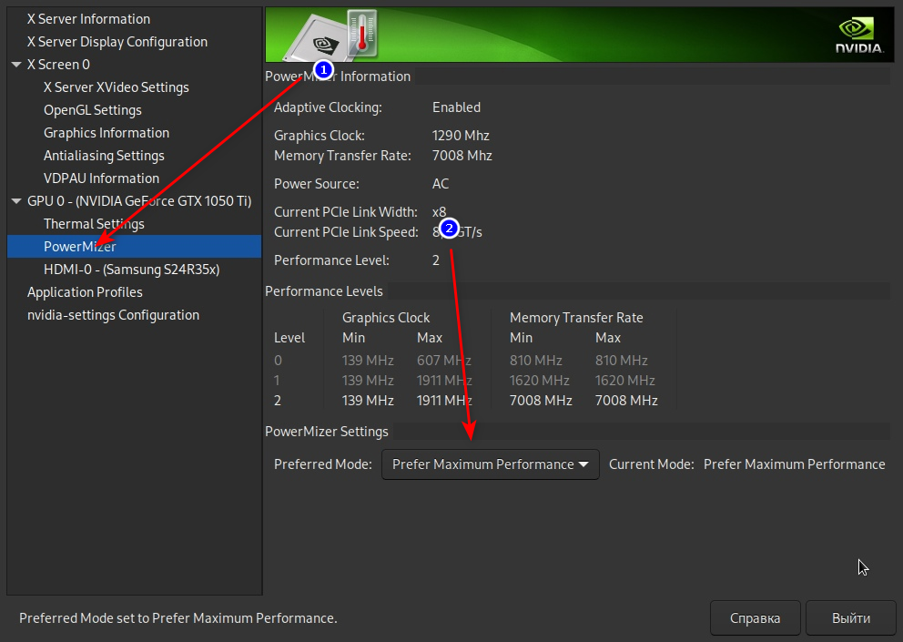

Первые шаги¶
Содержание:
Настройка pacman¶
Обновление ключей Arch Linux¶
Обновление ключей необходимо во избежание дальнейших проблем с установкой пакетов:
sudo pacman-key --init # Инициализация
sudo pacman-key --populate archlinux # Получить ключи из репозитория
sudo pacman-key --refresh-keys # Проверить текущие ключи на актуальность
sudo pacman -Sy # Обновить ключи для всей системы
Данная операция может занять продолжительное время.
Включение 32-битного репозитория¶
Убедимся, что конфигурация пакетного менеджера Pacman настроена для получения доступа к 32-битным зависимостям, нужным в частности для установки Wine и Steam.
Для этого раскоментируем так называемый multilib репозиторий:
sudo nano /etc/pacman.conf # Раскоментируйте последние две строчки как на скриншоте
sudo pacman -Suy # Обновление репозиториев и всех программ (пакетов)
Ускорение обновления системы¶
Утилита Reflector отсортирует доступные репозитории по скорости:
sudo pacman -S reflector rsync curl # Установка reflector и его зависимостей
Если вы из Европейской части России, то всегда советуем использовать зеркала Германии, так как их больше всего и они имеют оптимальную свежесть/скорость:
sudo reflector --verbose --country 'Germany' -l 25 --sort rate --save /etc/pacman.d/mirrorlist
Если вы проживаете не на территории Европейской части РФ или в иной стране, то просто измените Germany на Russia или ваше государство.
Можно также вручную отредактировать список зеркал, добавив туда зеркала из постоянно обновляющегося перечня на сайте Arch Linux (https://archlinux.org/mirrorlist/)
sudo nano /etc/pacman.d/mirrorlist # Рекомендуем прописывать зеркала от Яндекса
Установка базовых пакетов и набора программ¶
Вот основной набор программ который мы можем вам порекомендовать к установке первым делом:
sudo pacman -Syu base-devel \ # Обязательная к установке группа!
nano \ # Минималистичный консольный редактор
git \ # Консольный Git, нужен для установки AUR пакетов
chromium \ # Браузер, на ваш выбор
gvfs \ # Нужен для корзины
ccache \ # Ускоряет дальнейшее перекомпилирование больших пакетов
vlc \ # Плеер, на ваш выбор
steam \ # Steam, можно также установить steam-runtime
bleachbit \ # Программа очистки системы
grub-customizer \ # Графический менеджер настройки GRUB
unrar \ # Для поддержки архивов формата rar
unzip \ # Для поддержки архивов формата zip
file-roller \ # Минималистичный менеджер архивов
qbittorrent \ # Торрент-клиент, на ваш выбор
unace \ # Для поддержки архивов формата ace
lrzip \ # Для поддержки сжатия через rzip/lcma/lzo и т.д.
squashfs-tools
Дополнительно можно отметить легковесный файловый менеджер PCManFM:
sudo pacman -S pcmanfm-gtk3 gvfs
Мы установили набор джентльмена и парочку программ, что понадобятся нам в дальнейшем. Но если вас не устраивает тот или иной компонент, вы всегда можете найти любой пакет по адресу https://www.archlinux.org/packages/ или установить из AUR (т.е. скомпилировать) по адресу https://aur.archlinux.org/packages/.
Установка актуальных драйверов для видеокарты¶
В установке драйверов для Linux-систем нет ничего сложного, главное просто учитывать, что от свежести ядра и версии драйвера, будет зависеть получите ли вы чёрный экран смерти или нет (Шутка).
И да, устанавливайте драйвера ТОЛЬКО через пакетный менеджер вашего дистрибутива!
Забудьте про скачивание драйвера с сайта NVIDIA/AMD, это поможет вам избежать кучу проблем в дальнейшем.
NVIDIA¶
В гайде мы установим драйвер версии DKMS, который сам подстроится под нужное ядро и не позволит убить систему при обновлении (не касается свободных драйверов Mesa).
Перед установкой рекомендуется отключить "Secure Boot" в UEFI, ибо из-за это модули драйвера могут не загрузиться.
sudo pacman -S nvidia-dkms nvidia-utils lib32-nvidia-utils nvidia-settings vulkan-icd-loader lib32-vulkan-icd-loader lib32-opencl-nvidia opencl-nvidia libxnvctrl
sudo mkinitcpio -P # Обновляем образы ядра
Nouveau (Только для старых видеокарт)¶
Для старых видеокарт Nvidia (ниже GeForce 600) рекомендуется использовать свободную альтернативу драйвера NVIDIA — Nouveau, входящую в состав Mesa. Она имеет официальную поддержку и обновления в отличии от старых версий закрытого драйвера NVIDIA (340, 390) и отлично справляется с 2D ускорением. Вдобавок, Nouveau хорошо работает с Wayland.
sudo pacman -S mesa lib32-mesa xf86-video-nouveau vulkan-icd-loader lib32-vulkan-icd-loader
AMD¶
sudo pacman -S mesa lib32-mesa vulkan-radeon lib32-vulkan-radeon vulkan-icd-loader lib32-vulkan-icd-loader
Intel¶
sudo pacman -S mesa lib32-mesa vulkan-intel lib32-vulkan-intel vulkan-icd-loader lib32-vulkan-icd-loader
Данные команды выполнят установку так называемых автоматизированных DKMS драйверов, но внимание - автор использует проприетарный драйвер NVIDIA - если вы заметили ошибку или желаете более проверенный источник: GitHub.
Внимание
У авторов отсутствует оборудование AMD, поэтому в данном руководстве основной акцент будет сделан именно на настройке оборудования от компании NVIDIA. Если у вас есть желание дополнить это руководство специфичными для открытых драйверов Mesa твиками/оптимизациями, вы можете отправить нам свои изменения в качестве Pull Request'a на рассмотрение.
Добавление важных модулей в образы ядра¶
Прежде чем мы начнем, необходимо добавить важные модули в загрузочный образ нашего ядра. Это позволит нам избежать проблем в дальнейшем, и снизит риск словить "чёрный экран" при загрузке из-за того что какие-либо модули не были подгружены во время или просто отсутствуют.
Для этого отредактируем параметры сборки наших образов: sudo nano /etc/mkinitcpio.conf
Отредактируйте строку MODULES как показано на изображении и выполните команды ниже.
В массив (ограничен скобками) вы можете прописать любые модули ядра которые считаете наиболее важными и нужными. Ниже мы указали модули закрытого драйвера NVIDIA и файловой системы Btrfs.
Если у вас отсутствует видеокарта NVIDIA, но при этом у вас видеокарта от AMD/Intel, то прописывать вместо модулей NVIDIA нужно будет уже следующие модули соответственно: amdgpu radeon или crc32c-intel intel_agp i915.
Так же если у вас другая файловая система, то прописывать модули для Btrfs не нужно.
MODULES=(nvidia nvidia_modeset nvidia_uvm nvidia_drm crc32c libcrc32c zlib_deflate btrfs)

sudo mkinitcpio -P # Пересобираем наши образы ядра.
Установка микрокода¶
Микрокод - программа реализующая набор инструкций процессора. Она уже встроена в материнскую плату вашего компьютера, но скорее всего вы его либо не обновляли вовсе, либо делаете это не часто вместе с обновлением BIOS (UEFI).
Однако у ядра Linux есть возможность применять его обновления прямо во время загрузки. Обновления микрокода содержат множественные исправления ошибок и улучшения стабильности, поэтому настоятельно рекомендуется их периодически устанавливать.
Осуществляется это следующими командами:
sudo pacman -S intel-ucode # Установить микрокод Intel
sudo pacman -S amd-ucode # Установить микрокод AMD
sudo mkinitcpio -P # Пересобираем образы ядра.
sudo grub-mkconfig -o /boot/grub/grub.cfg # Обновляем загрузчик, можно так же через grub-customizer.
Настройка драйвера NVIDIA¶
После установки драйвера обязательно перезагрузитесь, откройте панель nvidia-settings, и выполните все шаги как показано на изображениях:
nvidia-settings # Открыть панель Nvidia

(Если у вас больше одного монитора, то выбирайте здесь тот, который имеет большую частоту обновления)
(Это изменение профиля питания видеокарты работает только до перезагрузки. Если вы хотите зафиксировать профиль производительности, то установите пакет nvidia-tweaks с параметром _powermizer_scheme=1, как описано в следующем подразделе.)

(Не забудьте здесь настроить все мониторы которые у вас есть, задать им правильное разрешение и частоту обновления.)

Теперь переместите ранее сохраненый файл настройки в /etc/X11/xorg.conf, чтобы примененные вами параметры работали для всей системы и не слетали после перезагрузки:
sudo mv ~/xorg.conf /etc/X11/xorg.conf
Внимание
Если вы используете GNOME/Plasma, то помните, что эти окружения могут игнорировать настройки для мониторов которые вы указали здесь, и использовать свои собственные. В этом случае настраивать мониторы нужно именно в настройках вашего рабочего окружения.
Твики драйвера NVIDIA¶
По умолчанию в закрытом NVIDIA драйвере не используются некоторые скрытые оптимизации которые могут помочь с улучшением производительности и работоспособности видеокарты. Например, по умолчанию драйвер работает в режиме совместимости с PCIe 2, поэтому у всех пользователей драйвера по умолчанию не задействуется высокоскоростная шина PCIe 3.0.
Поэтому, для того чтобы вы могли их активировать удобным способом, мы сделали пакет который включает в себя все эти твики для драйвера - nvidia-tweaks. Прежде чем устанавливать выполните установку самого драйвера NVIDIA как это было описано выше.
Установка
git clone https://aur.archlinux.org/nvidia-tweaks.git
cd nvidia-tweaks
nano PKGBUILD # В PKGBUILD вы можете найти больше опций для настройки, например настройку питания через PowerMizer
makepkg -sric
При возникновении следующей ошибки:
==> ОШИБКА: Cannot find the fakeroot binary.
==> ОШИБКА: Cannot find the strip binary required for object file stripping.
Выполните: sudo pacman -S base-devel
Специфические переменные окружения для драйвера NVIDIA¶
Указать вы их можете либо в Lutris для конкретных игр, либо в "Параметрах Запуска" игры в Steam ("Свойства" -> "Параметры запуска". После указания всех переменных обязательно добавьте в конце "%command%", для того чтобы Steam понимал, что вы указали именно системные переменные окружения для запуска игры, а не параметры специфичные для этой самой игры).
__GL_THREADED_OPTIMIZATIONS=1 (По умолчанию выключено) - Активируем многопоточную обработку OpenGL.
Используете выборочно для нативных игр/приложений, ибо иногда может наоборот вызывать регрессию производительности.
Некоторые игры и вовсе могут не запускаться с данной переменной (К примеру, некоторые нативно-запускаемые части Metro).
__GL_MaxFramesAllowed=1 (По умолчанию - 2) - Задает тип буферизации кадров драйвером.
Можете указать значение "3" (Тройная буферизация) для большего количества FPS и улучшения производительности в приложениях/играх с VSync.
Мы рекомендуем задавать вовсе "1" (т.е. не использовать буферизацию, подавать кадры так как они есть).
Это может заметно уменьшить значение FPS в играх, но взамен вы получите лучшие задержки отрисовки и реальный физический отклик,
т.к. кадр будет отображаться вам сразу на экран без лишних этапов его обработки.
__GL_YIELD="USLEEP" (По умолчанию без значения) - Довольно специфичный параметр, "USLEEP" - снижает нагрузку на CPU и некоторым образом помогает в борьбе с тирингом,
а "NOTHING" дает больше FPS при этом увеличивая нагрузку на процессор.
Разгон монитора с видеокартой NVIDIA (Только для опытных пользователей).¶
Вопреки мнению многих людей, в Linux таки возможно выполнить разгон монитора. Мы будем рассматривать этот вопрос только для владельцев GPU NVIDIA, поэтому данный способ может не подойти пользователям открытых драйверов Mesa.
Прежде всего, нужно узнать какой тип подключения у вашего монитора, сделать это можно при помощи утилиты xrandr:
sudo pacman -S xorg-xrandr # Установка
xrandr # Запуск
Из информации о наших мониторах, выводимой xrandr, нас интересует:
Тип подключения монитора который вы хотите разогнать (HDMI-0/DP-0 и т.д.)
Строчка с разрешением монитора для разгона. Необходимо чтобы рядом со значением его частоты обновления был знак звездочки (*). Это означает, что монитор способен выдавать большее количество Герц чем указано, т.е. его можно разогнать.
Затем переходим в панель управления NVIDIA X Settings (с Wayland данный способ не работает):
sudo nvidia-settings
В ней нам нужно полностью настроить наш разгоняемый монитор с соответствующим типом подключения во вкладке "X Server Display Configuration". Задайте разрешение монитора и его частоту обновления согласно тем значениям, что нам вывел xrandr и сохраните все настройки в xorg.conf через кнопку снизу: "Save X Configuration File".
После этого переходим во вкладку с названием монитора который вы хотите разогнать. К примеру: "HDMI-0 - (Samsung S24R35x)". И жмакаем на кнопоку "Acquire EDID..." -> И сохраняем EDID файл вашего монитора в домашнюю директорию (Это обязательный шаг, сохранять нужно только в домашнюю папку вашего пользователя).
Итак, теперь нам нужно отредактировать наш edid.bin файл монитора. К сожалению, в Linux нет инструментария для редактирования файлов этого формата, поэтому нам придется обратиться к запуску Windows программ под Wine. Об установке самого Wine будет описано далее в ARU. В качестве примера, мы установим и запустим данную (p.s. не реклама) программу при помощи Wine.
wine SetupAWEDIDEditor_02.00.13.exe # Установите следуя согласно инструкциям
Запустив эту программу откроем через меню наш сохраненный edid файл монитора, затем перейдем во вкладку "Detailed Data" -> "CVT 1.2 Wizard" и отредактируем значение строки "Rate" на требуемую частоту для, соответственно, разгона. О том, как найти нужное значение для вашего монитора - думайте сами и ищите на специализированных ресурсах. Для разных мониторов - разные значения.
Сохраняем уже измененный EDID файл (так же в домашнюю директорию) и закрываем программу. Теперь нужно указать путь до измененного EDID файла в ваш xorg.conf в секции с тем монитором который мы разгоняем:
sudo nano /etc/X11/xorg.conf # Редактируем ранее сохраненный xorg.conf
И добавляем туда опцию с полным путем к измененному EDID файлу в таком формате:
Option "CustomEDID" "HDMI-0:/home/ваше_имя_пользователя/edid.bin"
(Где HDMI-0 - ваш тип подключения, а edid.bin ваш файл для разгона)
Все. Теперь нужно перезагрузиться и наслаждаться новой частотой обновления монитора (При условии что вы указали правильное значение).
Предупреждение
Пользователи с VGA подключением монитора (и не только) могут испытывать проблему с черным экраном после перезагрузки. Поэтому, просим вас заранее сделать себе флешку с записанным на нее любым LiveCD окружением, для того чтобы можно было откатить изменения в случае возникновения проблем.
Видео версия